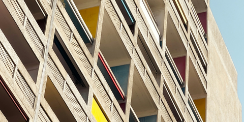
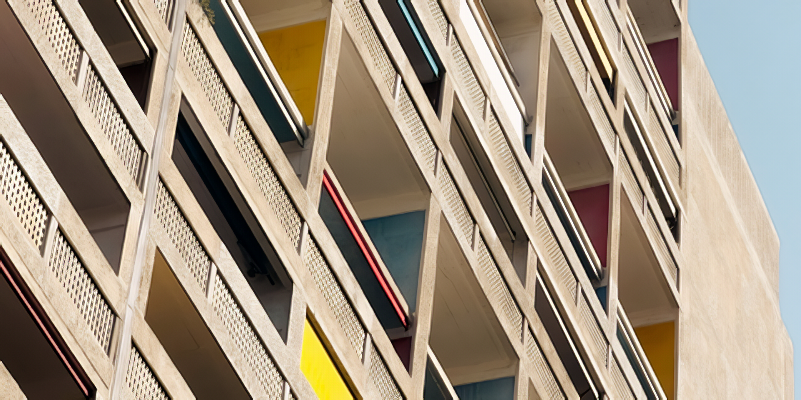

macOS
Apple Silicon · macOS 14+
Also available: v0.1.2-beta (415 MB) — see the download page
That photo you kept. The scan you found. The image that deserves a second look.
Enlarge it, soften the noise, or work on the blur. LocalSR is a free, open-source desktop app that runs the models on your own computer. Your photos and videos are never uploaded, and there is no account.
Download the beta macOS · Windows · LinuxMarseille, France
Concrete.
Color.
A little detail.


A real run, with room to inspect. This photograph was cropped and reduced to 480 × 240 pixels, then enlarged to 1920 × 960 with LocalSR’s Quick Start model. No extra blur was added to the input.
Photo: Tim Ziegelbaum
Model: SPAN NomosUni, Philip Hofmann
How this example was made
02 At your own desk
Local by designA desktop workspace for a patient second look. Choose a model, check the result, keep what works.

Open a photograph, screenshot, illustration, or scan. Work on a single image or build a batch queue.
JPEG · PNG · WebP · TIFF · DNGQuick Start gives you a place to begin. Choose a different model for photo enlargement, illustration, denoising, or deblurring.
Models download when you choose themInspect the preview and save a separate result. The processing happens here, on your computer. Your source image stays yours.
No cloud processing · No account03 Useful particulars
SR stands for super-resolution. It estimates a larger image from the pixels you already have. The result is a model’s interpretation, so the final judgment is yours.
04 Get LocalSR
A desktop applicationChoose the installer for your computer.
Bring an image you’d like to revisit.
v0.1.3-beta
Released
Before you begin
Yes. LocalSR is open source under the MIT license, with nothing to buy or sign up for. The models you download keep their own licenses; the model guide lists them.
No. Photos and videos are processed on your computer and never uploaded. You need an internet connection to download models; after that, they run locally. The app checks for updates at launch and sends an anonymous count with that check (app version, platform and channel, no identifiers), which you can turn off. The website counts visits without cookies. The privacy page has the details.
Features can still change, and the Mac build is the most tested: it is signed, notarized and tells you when a newer beta is available. The Windows and Linux packages pass the same automated checks but have not had the manual testing the Mac build gets. Keep your originals. The release notes spell out the current limitations, and bugs go to GitHub Issues.
On a Mac, yes: the app uses the Apple Silicon GPU through Metal (MPS), with a CPU fallback. The Windows and Linux packages run on the CPU for now; GPU editions for NVIDIA, AMD and DirectML are still held back, as the beta notes explain.
Super-resolution estimates plausible detail from an image. It cannot guarantee the recovery of information that was lost, and results vary by source and model. Inspect small text, faces, and fine patterns carefully.
Most models download separately, when selected. The optional HAT-S and HAT-L Face variants require a verified user-supplied checkpoint; read about their results and availability. LocalSR checks curated downloads against their expected size and SHA-256 checksum. Model sizes and licenses vary; some commercial-use terms still need clarification. See the model notes before using a particular model commercially.